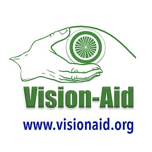
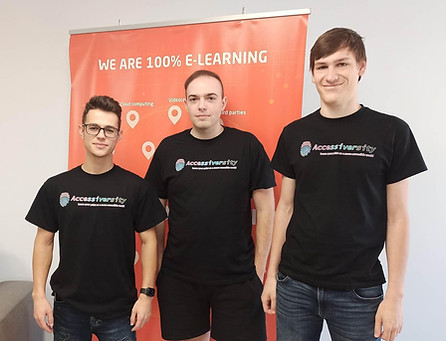
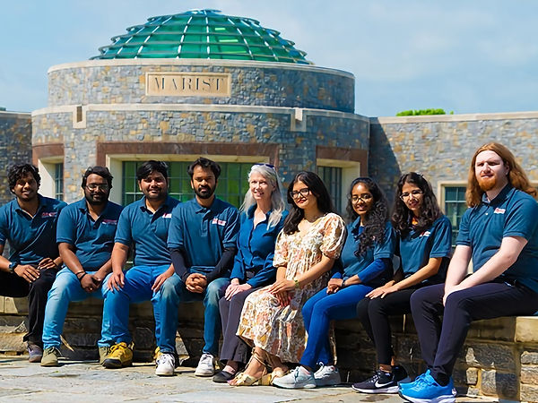
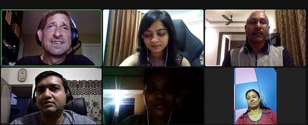
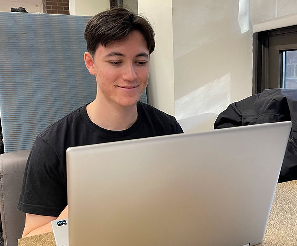

ACCESSIBILITY STRATEGY
- Introduction
- Historical Context
- Investment & Commitment
- Community Integration
- Authenticity & Transparency
- Sakai 22 VPAT Process
- Evaluation Methods Used
- Tools/Features Tested
- Types of Testing Performed
- Results & Reporting
- Sakai 22 Accessibility Conformance Report
- Evaluation Methods Used
- Tools/Features Tested
- Types of Testing Performed
- Results and Reporting
- Sakai 23 Accessibility Conformance Report
Introduction:
The Sakai community is committed to ensuring all core features of the Sakai project are accessible and usable by the greatest number of potential users, including individuals with disabilities.
Sakai is developed and maintained to meet or exceed all accessibility design principles found in recognized international standards. Our goal is to meet all of the W3C (World Wide Web Consortium) Web Content Accessibility Guidelines (WCAG) 2.2 Level A and AA Success Criteria. We also use emerging standards and best practice design techniques, such as the WAI-ARIA (Web Accessibility Initiative – Accessible Rich Internet Applications) Suite that support existing and emerging assistive technologies. At the same time, we recognize that even the most well-intentioned accessibility standards can only account for so much. This is why we have gone to such great lengths to fully integrate individuals with disabilities into our open source community, because we believe that it is their real world experiences, and practical interactions with our product that matter most.
Historical Context:
Sakai’s greatest strength is that it is fully open source and is created by, and for educators. Our model not only allows for but encourages a direct feedback loop with our customers. If our faculty or student users have a need, we are there to listen, and are better able to respond and deliver solutions in an accelerated manner. In this way, Sakai continually innovates and brings new ideas and technologies to market. In fact, every option in Sakai’s rich tool set has grown out of a feature request or pedagogical need expressed by the faculty, staff, and students using the system.
Sakai’s origins can be traced back to a Mellon Foundation grant to develop an open-source alternative to other commercially available LMS offerings. Even now, Sakai stays true to its roots as one of many open source projects within the portfolio of the Apereo Foundation, a global network with member institutions on six continents. Apereo actively seeks partnerships to further their mission of creating and sustaining software that supports learning, teaching, and research.
Investment & Commitment:
The Sakai community regularly evaluates Sakai’s accessibility to ensure it meets the needs of faculty and students. We subscribe to the philosophy that accessibility is not a “one-and-done” type proposition – it is something that you have to continually be focusing on, and constantly working at to be successful. For Sakai, accessibility isn’t an afterthought, it is an integral part of everything our community does. As Learning Management Systems go, Sakai is un-matched when it comes to its investment in, and commitment to accessibility.
Chris Knapp, an accessibility consultant/tester who operates a disability-owned business called Accessiversity, currently serves as The Sakai Accessibility Team Lead. As someone who is statutorily blind and has to rely on screen readers and other assistive technology to interact with a complex web application like Sakai, he is uniquely positioned to understand and articulate the specific needs of these users, while providing for an authentic accessibility experience. However, Chris is not the only embedded resource focused on accessibility. In fact, our community is fortunate to have an entire team of blind, low-vision testers who are regularly working on Sakai, and have been doing so for several years now thanks to a partnership with Vision-Aid, a non-profit organization which provides IT-related training to blind and low-vision individuals in India.

Another individual who has been an invaluable resource when it comes to helping Sakai develop, and continually improve its accessibility strategy, is Gonzalo Silverio. Gonzalo works for Information and Technology Services at the University of Michigan where he specializes in Digital Accessibility. Gonzalo’s role as an informal VPAT advisor draws on his years of experience supporting accessibility within Learning Management Systems, going back to the formative years of Sakai where he contributed much of the early accessibility work to the original code base as a member of the grant-funded project team, and more recently in his current role at U of M, where he regularly reviews VPATs as part of the university’s purchasing/procurement process.

The Team at Entornos de Formación - “We are helping to leave our prints on a more accessible world by leveraging our work with the next generation digital learning environment to constantly evolve the Sakai LMS to be as accessible and as user friendly as possible.”
Our extended accessibility team also includes traditional developers, UX teams, instructional designers, and others who are well versed in accessible design. Our commercial affiliates (who employ the majority of the full-time developers working on the Sakai Project) have access to automated testing tools that they can use to check for potential accessibility issues before their work gets contributed to the base code. Similarly, when adopting Sakai institutions develop new tools or features, members of the Sakai Accessibility Team are available to test out the new feature in the school’s development environment prior to it being contributed back to Sakai.
In the past, some Sakai adopting institutions have even sought out individuals with disabilities enrolled at their schools and hired them as student workers to assist with accessibility testing to support/enhance their on-campus quality assurance efforts.
Of course, all of these efforts come back to benefit the Sakai community as a whole, where the lines between users, practitioners, and contributors are blurred in pursuit of a robust product that can be grown and evolved to meet the collective needs of all involved.
Community Integration:
The Sakai Accessibility Team is an embedded resource actively participating in every facet of the open-source Sakai Community. This immersive and hands on approach allows the Accessibility Team to experience, and thus positively affect, accessibility at every stage of the product’s development life cycle.
First, our accessibility testers act as members of the Sakai QA Team. Their main responsibility is to perform routine user testing, whether it is to provide preliminary feedback on a prototype of a new tool/feature, check for regressions/report bugs, or verify fixes when they are ready to be merged into a branch.

Part of the team from Marist College (pictured left to right: Charan Epuri, Mohan Raghudev Pulligilla, Jayasimha Reddy Kalla, Vaibhav Meshram, Dede Hourican, Chandrika Neradabilli, ShivaPriya Poolapally, Sucharitha Gaini, Matthew Zeppetelli )
This user testing also extends to real-time problem resolution, such as setting up interactive test sessions to troubleshoot issues. For example, testers may help a developer understand how assistive technology is interacting with a particular tool/feature. Or, they may work with a user to diagnose and resolve some accessibility-related problem the user might be experiencing.
The weekly Jira Triage meeting is another opportunity for members of the Sakai Accessibility Team to contribute their expertise, especially as it relates to reviewing/prioritizing accessibility-related tickets and helping determine whether a specific type of QA is needed, for example, screen reader testing.
There is a Sakai Accessibility Working Group that meets twice a month to discuss various accessibility-related issues that community members might need help with. Outside of the bi-monthly Sakai Accessibility Working Group meetings, we maintain an email listserv that people can use to reach out to the Sakai Accessibility Team at any point if they have a question/problem. Questions sent to this list receive a timely response, usually within the same day, and often within a few hours of their inquiry.
The Sakai Accessibility Team Lead also attends the weekly Core Team calls to report out on the efforts of the Sakai Accessibility Team, discuss any pertinent accessibility-related topics, and serve as a subject matter expert for fielding questions about specific accessibility issues/topics during the technical portion of the call.
As a member of the Sakai PMC (Project Management Committee) the Sakai Accessibility Team Lead is also part of the formal governance structure, and therefore able to advocate for accessibility at the highest, most strategic levels of the organization.
Authenticity & Transparency:
Results of Sakai accessibility evaluations are publicly available. Moreover, we have gone to great lengths to extensively test as much of our product as possible, which is reflected in the amount of detail, and level of specificity included in the below summaries, as well as in the findings of the associated VPAT audit reports.
Sakai 22 VPAT Process:
Evaluation Methods Used:
For us in the Sakai community, VPAT’s are not just paperwork, they are personal.
This is one of the reasons why we have moved away from using outside contractors to create our VPATs, as we chose to do for previous Sakai versions. Instead, we have opted to utilize existing, internal resources to complete this work. After all, who is better to tell Sakai’s accessibility story than the users and practitioners on the front lines who have been innovating this immersive, community-sourced approach to accessibility? Our embedded resources are interacting with the product throughout each stage of the development life cycle, so they are ideally suited to assess and document Sakai’s overall conformance to standards.
Tools/Features Tested:
Sakai is built around an entire suite of exemplary online learning, teaching, and collaboration tools, and features a highly configurable system of roles and permissions which allows organizations to customize the platform to effectively and efficiently manage courses and users. As a result, extensive testing for the instructor, student, teaching assistant, and admin roles was performed across 23 different Sakai tools/features to simulate the types of common use cases experienced by Sakai adopting institutions.
Some of the tools/features evaluated included:
- The Sakai Gateway page/main user interface/portal, including the Profile tool.
- Administration Workspace including the Work Site Set-up process, using the Sites tool for adding external tools, etc. plus other admin-level tools like Resources and Site Info used to organize/manage courses, users and content.
- All of the “high stakes” tools (i.e. any tool that features some sort of grading component) including in-depth testing of the following tools:
- Assignments—For posting, submitting, and grading assignments online.
- Gradebook—For scoring, calculating, and viewing grades.
- Lessons—For creating, organizing, and delivering content modules and sequences, such as by week or unit.
- Rubrics—For creating and managing grading rubrics for use in the Gradebook and in individual assessment tools.
- Tests & Quizzes—For creating and taking online assessments.
- A representative sampling of other commonly used tools/features including Calendar, Chat Room, Commons, Contact Us, Discussions/Forums, Drop Box, Polls, Statistics, and Syllabus.
- As well as the brand new Conversations tool which is an experimental tool available in Sakai 22.
Types of Testing Performed:
While there’s really no beginning or ending to this process, you can think of our approach to the Sakai 22 accessibility testing and VPAT in terms of progressing through a series of different checkpoints, or passing certain critical thresholds.
Because a vast majority of web accessibility is either visual in nature, or focuses on the user’s ability to navigate with a keyboard (for example, individuals with mobility issues/limited dexterity who are not able to use a computer mouse) a large percentage of our ongoing accessibility efforts focus on keyboard/screen reader testing.
However, we also test for screen magnification by using products like ZoomText or similar tools natively available in some of the more popular web browsers, and leverage a variety of readily available widgets/plug-ins to check for things like color contrast, text spacing, etc.
Since there is no video or audio content that is part of Sakai by default, we don’t specifically test for captions, transcripts, etc. Instead, for user-generated content, we provide a series of help topics in our Sakai User Guide, such as how to create accessible video and audio content.
For other types of accessibility testing, Sakai is able to leverage its third-party accessibility partners, Accessiversity and/or Vision-Aid, to enlist the services of individuals with specific types of disabilities to perform targeted user testing by harnessing their real-world skills/experience using their preferred assistive technologies.
As we commenced our work on the Sakai 22 VPAT, one of the first things that we did, was have some students from Marist College go through and complete keyboard testing on an adapted version of our accessibility test script. These were sighted individuals who serve as part of our regular Sakai QA team. We refer to this first round of user testing as “Accessibility LITE,” as the students were just trying to verify whether various tasks in Sakai could be completed using only the keyboard, which serves as a sort of early warning system for identifying potential accessibility problems.
At the same time, our Sakai Accessibility Team Lead (who again, is statutorily blind and relies on screen readers and other assistive technology to interact with digital content) along with a group of blind/low-vision testers from Vision-Aid started performing manual functional verification testing. The manual functional verification testing consisted of keyboard and screen reader testing using four different screen reader and web browser combinations:
- JAWS + Chrome,
- JAWS + Edge,
- NVDA + Chrome,
- and NVDA + Firefox

Screenshot from one of Chris’ regular sync-up calls with part of the Vision-Aid team based in India. Pictured in the photo (top row, from left to right) Chris, Sheetal, and Vijay (bottom row, from left to right) Bhargav, Satya, and Megha.
Between the manual functional verification testing performed by the Sakai Accessibility Team Lead and Vision-Aid testers, along with the keyboard testing performed by the sighted users as part of our “Accessibility LITE” testing, more than 2,853 test cases were performed across 23 different Sakai tools & features.
Of the 2,853 test cases, there were only 91 which had to initially be failed - meaning that right out of the gate, there was a nearly 97% success rate when it came to keyboard and screen reader users being able to perform various tasks in Sakai.
For any test cases which needed to be failed (whether as a result of the “Accessibility LITE” keyboard testing performed by sighted users, or the manual functional verification testing performed by blind/low-vision testers) Jira tickets were created and were appropriately triaged and assigned as high priority issues.
For the Sakai 22 VPAT, we also leveraged not one, but two different automated test tools, AXE Pro and SortSite, to perform accessibility scans of the pages of a sample Sakai Course Site, which again, corresponded to these same 23 commonly used tools and features that represent a typical Course Site used by a Sakai adopting institution.
As needed, we also used members of our Sakai QA team to help perform manual tests on certain WCAG success criteria that require a sighted user to evaluate.
We also performed extensive user testing on the new Conversations tool, which is an experimental tool available in 22.x.
Results & Reporting:
For the actual audit work which focused on preparing the basic findings for the VPAT report, we went through and compiled results from the automated testing, along with any of the previously referenced failed test cases from the manual functional verification testing. The raw data was then thoroughly analyzed and automated test results were checked for false positives. At the same time, other questionable results were manually retested, to either validate or reject the findings generated by a particular method/approach.
And the Sakai 22 testing and VPAT work doesn’t stop there. Dozens of Jira tickets have been filed as we continue to work on resolving various issues that were identified, with some of these fixes having already made their way into 22.X, with many others slated to be merged or back-ported to 22.X once they are ready for production.
Sakai 22 Accessibility Conformance Report
Our Accessibility Conformance Report (ACR) for Sakai 22 (available at the link below) is based on VPAT® Version 2.4 INTL template published by the Information Technology Industry Council (ITIC). The report covers:
- conformance with WCAG 2.1 at Levels A, AA, and AAA,
- compliance with Section 508 of the Rehabilitation Act, 1973 revised in 2017, and
- compliance with the Harmonised European Standard EN 301 549 Accessibility Requirements for ICT Products and Services V3.1.1 (2019-11) and EN Accessibility Requirements for ICT Products & Services V3.2.1 (2021-03).
If you would like more information or have questions about Sakai’s ongoing accessibility efforts, please contact: Accessibility@SakaiLMS.org
That’s why for the Sakai 23 VPAT, we have doubled-down on our community-sourced approach to accessibility. When it comes to telling Sakai’s accessibility story, we’ve once again turned to the users and practitioners on the front lines who have been completely immersed in this work. Our embedded resources are interacting with the product throughout each stage of the development life cycle, so they are ideally suited to assess and document Sakai’s overall conformance to standards.
Sakai is built around an entire suite of exemplary online learning, teaching, and collaboration tools, and features a highly configurable system of roles and permissions which allows organizations to customize the platform to effectively and efficiently manage courses and users. As a result, extensive testing for the instructor, student, teaching assistant, and admin roles was performed across 29 different Sakai tools/features to simulate the types of common use cases experienced by Sakai adopting institutions.
- The Sakai Gateway page/main user interface/portal, including the Profile tool.
- Administration Workspace including the Work Site Set-up process, using the Sites tool for adding external tools, etc. plus other admin-level tools like Resources and Site Info used to organize/manage courses, users and content.
- All of the “high stakes” tools (i.e. any tool that features some sort of grading component) including in-depth testing of the following tools:
- Assignments—For posting, submitting, and grading assignments online.
- Gradebook—For scoring, calculating, and viewing grades.
- Lessons—For creating, organizing, and delivering content modules and sequences, such as by week or unit.
- Rubrics—For creating and managing grading rubrics for use in the Gradebook and in individual assessment tools.
- Tests & Quizzes—For creating and taking online assessments.
- A representative sampling of other commonly used tools/features including Announcements, Calendar, Chat Room, Commons, Contact Us, Conversations, Dashboard, Discussions/Forums, Drop Box, Polls, Search, Section Info, Statistics, and Syllabus.
- As well as Sakai Plus, a new tool available in Sakai 23 that uses LTI (Learning Tool Interoperability) standards, allowing institutions to run an instance of Sakai overtop of their enterprise LMS.
Sakai 23 features a completely redesigned, new and improved user interface. This cleaner, more modern UI is a result of a large-scale effort to update to the Bootstrap 5 CSS library & component framework. Specifically, the Sakai developers have continued to refer to the Bootstrap documentation when coding the new UI, since it contains examples that help to demonstrate best practices with regards to the use of aria attributes. Also, Sakai 23 represents the heaviest usage of the Bootstrap interactive components to date, which should continue to pay dividends from an accessibility standpoint, since these components have been designed to work with multiple different types of interfaces, and rely on relevant WAI-ARIA roles and attributes to ensure they are rendered understandable and operable for different types of assistive technologies such as screen readers.
While there’s really no beginning or ending to this process, you can think of our approach to the Sakai 23 accessibility testing and VPAT in terms of progressing through a series of different checkpoints, or passing certain critical thresholds.
As we began work on this latest VPAT, we once again had some students from Marist College go through and complete keyboard testing on an adapted version of our accessibility test script. These were sighted individuals who serve as part of our regular Sakai QA team. We refer to this first round of user testing as “Accessibility LITE,” as the students were just trying to verify whether various tasks in Sakai could be completed using only the keyboard, which serves as a sort of early warning system for identifying potential accessibility problems.
- JAWS + Chrome,
- JAWS + Edge,
- NVDA + Firefox,
- and for the first time, Voiceover + Safari

Sam Ahrens, a recent graduate from Purdue University, is one of the Sakai QA team members who assisted with the Sakai 23 VPAT efforts. Sam performed nearly 400 tests across more than a dozen WCAG Success Criteria that required testing by a sighted user, such as WCAG 2.5.8 Target Size (minimum) which is one of the new Success Criteria that came out in the latest WCAG 2.2 guidelines.
Between the manual functional verification testing performed by the Sakai Accessibility Team Lead and Vision-Aid testers, along with the keyboard testing performed by the sighted users as part of our “Accessibility LITE” testing, more than 5,096 test cases were performed across 29 different Sakai tools & features.
Of the 5,096 test cases, there were only 90 which had to initially be failed - meaning that right out of the gate, there was a more than 98% success rate when it came to keyboard and screen reader users being able to perform various tasks in Sakai.
For the Sakai 23 VPAT, we again leveraged two different automated test tools, AXE Pro and SortSite, to perform accessibility scans of the pages of a sample Sakai Course Site, which again, corresponded to these same 29 commonly used tools and features that represent a typical Course Site used by a Sakai adopting institution.
We also performed extensive user testing on Sakai Plus, which is a new tool available in 23.X.
And the Sakai 23 testing and VPAT work doesn’t stop there. A number of Jira tickets have been filed as we continue to work on resolving various issues that were identified, with some of these fixes having already made their way into 23.X, with many others slated to be merged or back-ported to 23.X once they are ready for production.
Sakai 23 Accessibility Conformance Report
Our Accessibility Conformance Report (ACR) for Sakai 23 (available at the link below) is based on VPAT Version 2.5 International template published by the Information Technology Industry Council (ITIC). The report covers:
- conformance with WCAG 2.2 at Levels A, AA, and AAA,
- compliance with Section 508 of the Rehabilitation Act, 1973 revised in 2017, and
- compliance with the Harmonised European Standard EN 301 549 Accessibility Requirements for ICT Products and Services V3.1.1 (2019-11) and EN Accessibility Requirements for ICT Products & Services V3.2.1 (2021-03).